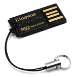

Instalace Raspbianu na SD kartu
U přípravy SD karty jsem vycházel z návodu na Linuxsoft.cz.
Nejdříve je nutné stáhnout image Raspbianu. Poté je možné pustit se do nahrávání na kartu. Já jsem měl trochu problém hned z rozchozením čtečky karet. Stará "šuplíková" čtečka Alcor Micro mi nechodí a čtečka v mém Lenovo G570 jde i po nahrání firmware jen read only (ačkoli všem ostatním to asi chodí). Dokonce jsem ji podle jednoho blogu profouk vyduchem, ale nepomohlo to. Nakonec se mi osvědčila miniaturní usb čtečka Kingston - kdo by byl to řekl.

Použité příkazy pro práci s SD kartou:
- Výpis připojených disků:
df -h - Odpojení oddílů disku:
umount /dev/sdXx /dev/sdXy - Nahrání obrazu na disk:
dd if=soubor_s_obrazem of=/dev/sdX - Vytvoření obrazu disku (záloha):
dd if=/dev/sdX of=soubor_s_obrazem
Postup nahrání obrazu na SD kartu:
V prvé řadě musíte vědět, kam vlastně chcete obraz nahrávat. Spustíte tedy příkaz
df -h
df.
Rozdíl obou výpisů jsou oddíly disku, na který budeme nahrávat.
V mém případě šlo o /dev/sdc1 a /dev/sdc2 - na kartě jsou z předchozích pokusů dva oddíly.
Všechny připojené oddíly karty je nutné před nahráváním odpojit. Tedy příkaz
sudo umount /dev/sdc1 /dev/sdc2
sudo dd if=2012-07-15-wheezy-raspbian.img of=/dev/sdc
Vytvoření zálohy (obrazu) SD karty:
Stejným způsobem je možné vytvořit zálohu disku pro případ, že jste v experimentování se systémem někam dospěli a chcete si ten stav uložit, aby jste se měli kam vracet.
sudo dd if=/dev/sdc of=dnesni_porce_malin.img
tar -cvzf dnesni_porce_malin.tar.gz dnesni_porce_malin.imgsudo rm dnesni_porce_malin.img
tar -zxvf dnesni_porce_malin.tar.gz